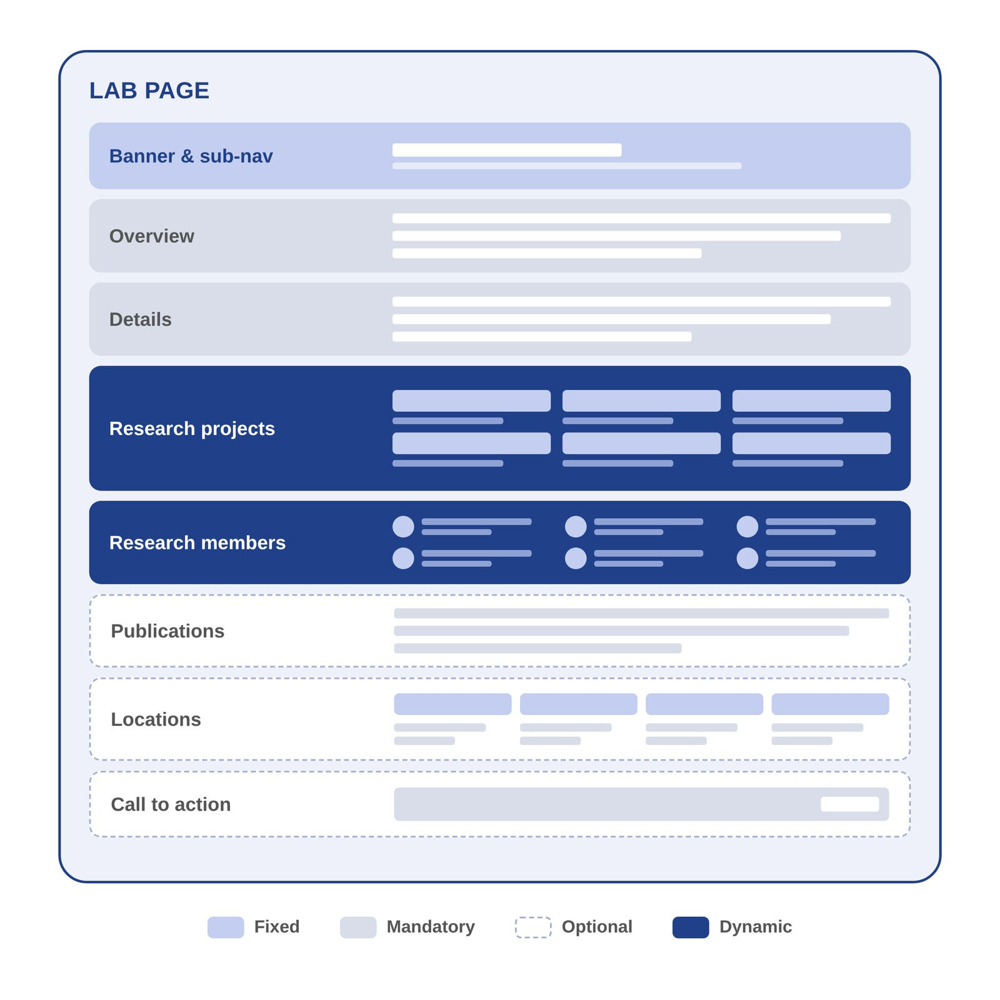
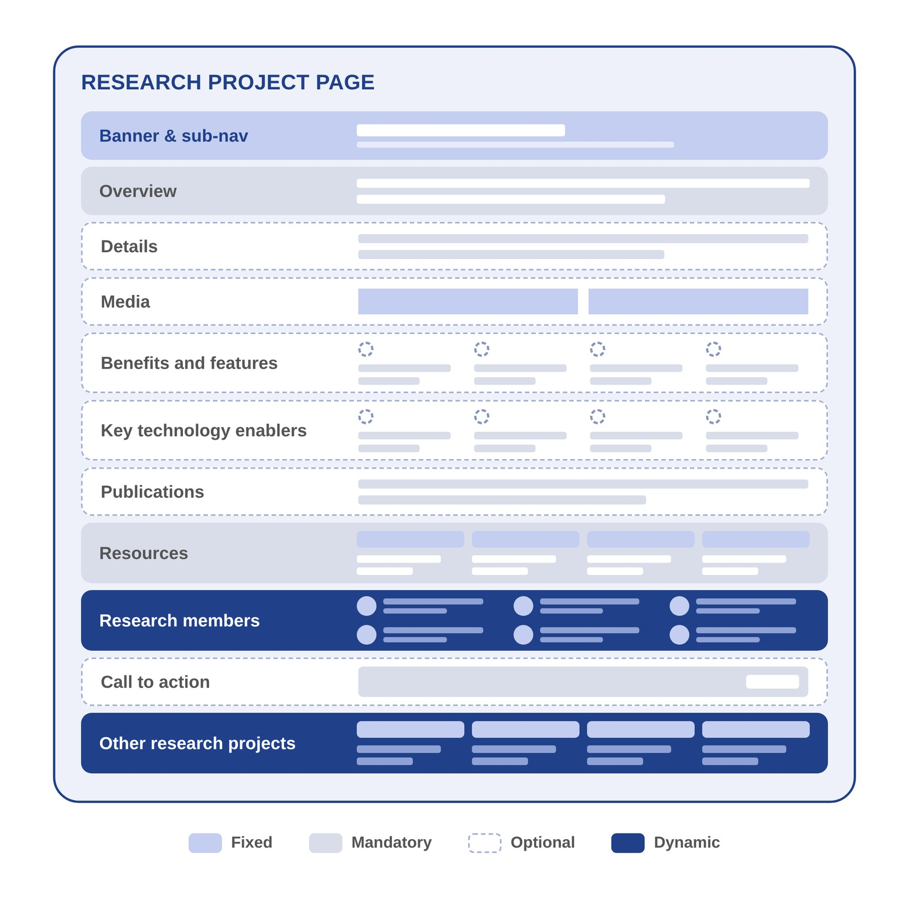
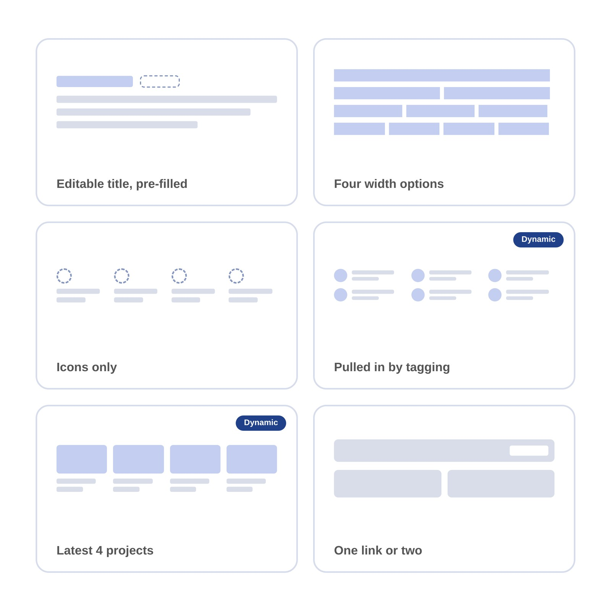

Nokia
Overview
Nokia’s marketing website had grown across 16 teams with no shared guidelines, leading to an inconsistent experience and slow content production. As Senior Product Designer with platform-level ownership, reporting directly to the Head of UX, I shifted the focus from designing individual pages to designing a scalable system, giving teams the freedom to publish quickly while keeping one consistent Nokia experience.
I owned the end-to-end design of a modular, template-based page platform, including UX strategy, design governance, CMS interaction design, and user research and A/B testing, reducing page creation time by 60% and design involvement per page by approximately 40–50%, and turning the website into a scalable platform rather than a collection of pages.
Business problem
Why it couldn’t wait:
- • 16 teams creating their own pages, with no shared guidelines
- • ~2 weeks to create one full page (design, content and revision)
- • Visitors thought they were being sent to external websites while still on Nokia’s own marketing site
- • Inconsistent patterns diluted the brand and made the site harder to trust
Business cost
- Slow time-to-market, and design and engineering time spent on repeat work.
Design challenge
- How do you give 16 teams the freedom to publish quickly without losing one consistent Nokia experience?
- Teams across Networks, Bell Labs research and external vendors each had their own needs, and every new page added to the inconsistency.
Objectives
& Success metrics
Speed up content production
- KPI Time to create a full page
- From ~2 weeks → one week or less
Free up design capacity
- KPI Design involvement per page
- Significant reduction, so designers focus on higher-value work
Reduce dependencies
- KPI Design and external-agency requests
- Fewer requests per page
Protect brand consistency
- KPI Pages built on governed components
- Standards enforced by the system
Target users
- • Content creators and marketing teams across Networks, Bell Labs research, Energy and resources, and other groups
- • External vendors building pages for Nokia
- • Website visitors: customers, partners and researchers exploring Nokia’s solutions, industries and research
Key insight
- Content teams didn’t need more design freedom. They needed clear structure and guardrails so they could move fast without making design decisions.
Role &
Responsibilities
As a Senior Product Designer (individual contributor) with platform-level ownership, I reported directly to the Head of UX and influenced 16 teams around one shared system. I worked mainly with the UK and Canada teams and coordinated with teams in the USA and India.
Key responsibilities:
- • Defined UX strategy and design governance for the marketing website
- • Owned the page architecture and the CMS interaction model
- • Led UX/UI across the site, including 10+ projects and new features
- • Wrote UI specifications and developer acceptance criteria, and managed intake and tickets
- • Ran user research, testing, surveys and A/B tests
- • Improved CMS usability, including SVG coding for advanced components
- • Contributed to Nokia’s digital brand guidelines and design system, and helped the branding team establish the tone of voice
Process &
Key decisions
Templates tailored by use case
- Templates for Bell Labs research or Energy and resources share components but have their own structure, with clear sequencing that lowers the load on content creators.
- IMPACT
- Faster page creation, less guesswork
Adaptive components
- One component, such as a slider, can show text only, images only, or images with labels and searchable tags. This cuts component sprawl while keeping flexibility.
- IMPACT
- More reuse, less inconsistency
Guidance built into the tool
- Each template has general guidance and each component has stricter usage rules, so content teams only validate content, and brand and UX standards are enforced by the system.
- IMPACT
- Governance moves from manual review to system-enforced standards
Making it stick
- Pilot: started with two Bell Labs templates, built directly in the CMS
- Guardrails: documented clear usage rules and guidelines for creators
- Measure: tracked analytics and performance data after launch
- Business case: presented the results to leadership and got approval to roll out across the whole website
- Teams first expected a lot of backend work. Once results showed, many sent feedback appreciating how intuitive and fast the system was.
Scope & Delivery
Platforms
- • Nokia’s marketing website and internal CMS
Deliverables
- • Modular page templates and adaptive components, implemented in the CMS
- • Usage rules, guidelines and documentation
- • UI specifications and developer acceptance criteria
- • Contributions to brand guidelines and design system
- • Business case for the full rollout
Business impact
Page creation time
- 60% faster, from about 2 weeks to a week or less
Design involvement
- ~40–50% less per page
Dependencies
- Fewer development touchpoints, faster approvals, and lower dependency on external agencies
Users
- Users stayed longer and explored more solutions, industries and research
Organisation
- Content teams shifted from page builders to content strategists, and the website became a scalable platform rather than a collection of pages
Key learnings
- • Designing systems, not screens, is what makes the difference at enterprise scale
- • Governance built into the tools works better than manual oversight
- • Modular design unlocks speed, consistency and autonomy
- • Senior designers create impact by influencing structure, not just output


